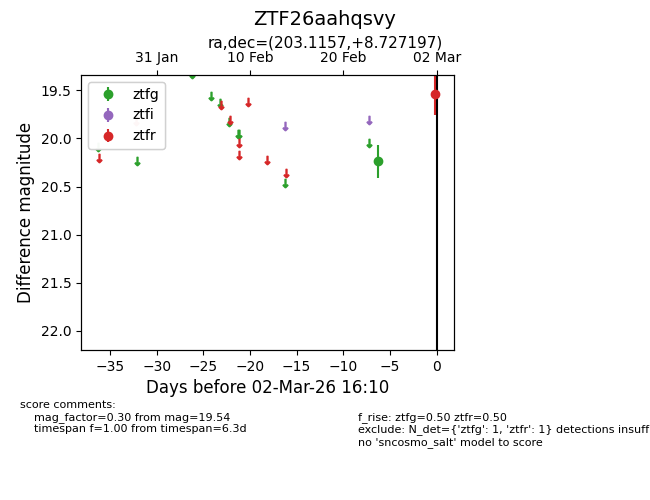
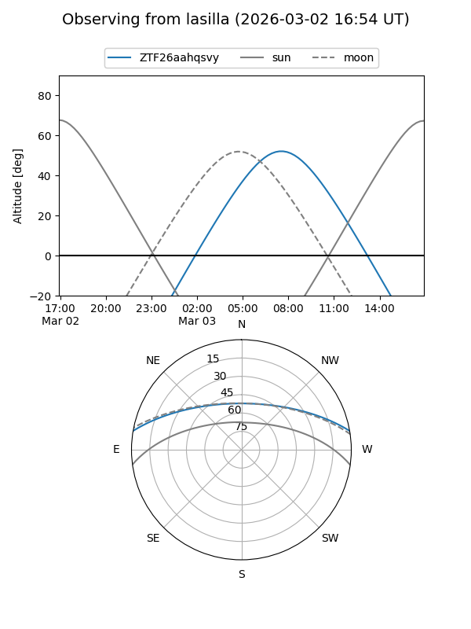
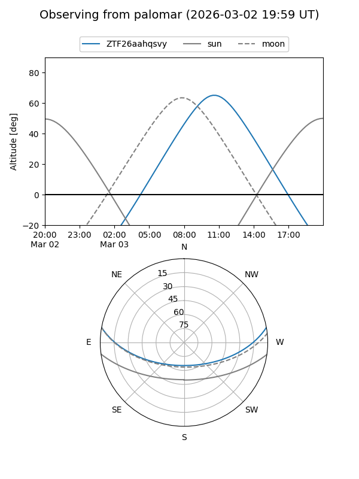

ZTF26aahqsvy
Target ZTF26aahqsvy at 2026-03-02 16:11
Aliases and brokers:
FINK: link
Lasair: link
ALeRCE: link
alt names
ZTF26aahqsvy (ztf,fink_ztf)
Coordinates:
equatorial (ra, dec) = 203.1157,+8.72720
equatorial (HMS+DMS) = 13:32:27.76,+08:43:37.91
galactic (l, b) = (332.6380,+69.19814)
Flags:
Photometry:
last ztfg=20.24, ztfr=19.54
1 ztfg, 1 ztfr detections
Lightcurve

Visibility


Additional plots